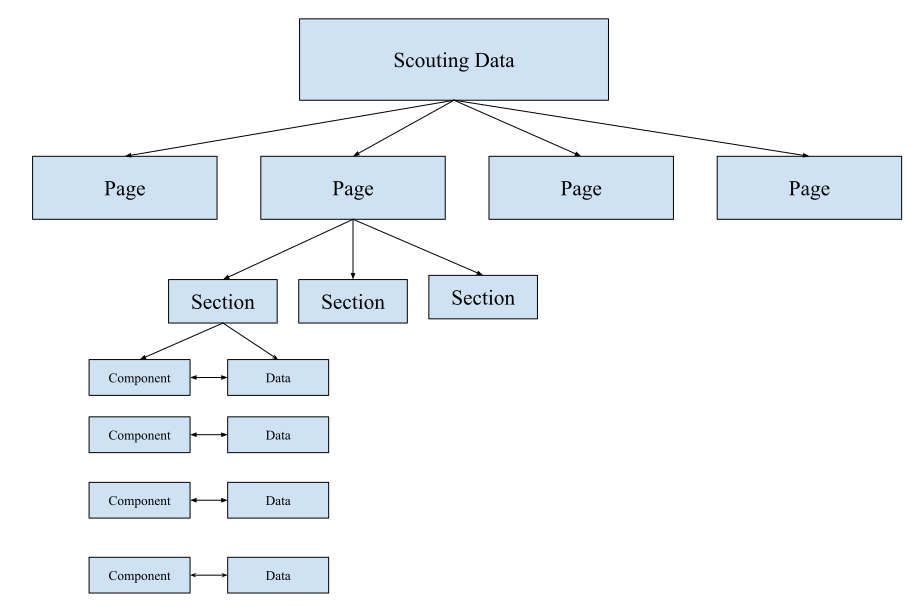
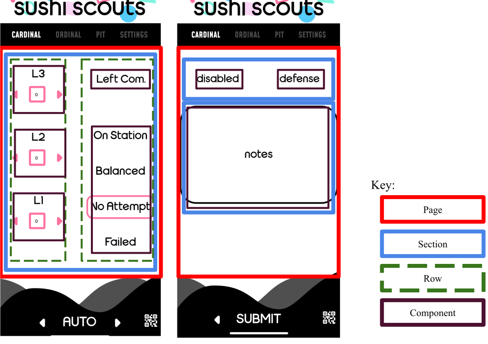

Application Structure
We will split the application structure into two section. The first will cover the application structure from a user perspective (different app pages, how data gets uploaded, etc.) the second will cover the structure of how we store scouting data.
User Perspective
The app is split into three sections. Sushi Scouts, Supervise, and Strategy. Sushi Scouts collects data (used by scouters), Supervise stores data (used by lead scout), and Strategy (used by strategy team) displays the data. Throughout this process the data flows through multiple phones. Data transfer from sushi scouts to supervise is done through QR codes to decrease reliance on internet connections at completions. While data transfer from supervise to strategy is done using a remote firebase server this is done to decrease the amount of time a strategy members needs to get the most up to date data.
Data Perspective
Scouting data is stored using the ScoutingData class. This class manages data by splitting it into an array of Page class’s. From their each page has an array of Section class’s. Finally the Section class has an array of Component and Data class’s. The structure can be seen in the diagram bellow. The scouting data class can be thought of as HTML DOM for the scouting app since the code in the scouting app dynamical renders an UI based on the contents of the ScoutingData class.
The reason for the way the data is split up is due to the previously mentioned constraint of having to adapt the scouting app to each new game. Each piece of data that is collected can be represented by a component. For example when collecting data about a team number, a TextInput component might be used. However only having components as part of the model is not ideal, as the user now has no control over the structure of the UI. To combat this the Page class is used to create new pages of components. Furthermore pages are split into Section class’s. Finlay Section contained components which were split up into rows using a field in the config file. However the Component class only defines the physical appearance of the component (such as color, and component type), so each Component was also given a Data class where the data was stored. The bellow figure shows a screenshot from our 2023 scouting app, and is split up in the it would be in the code.
